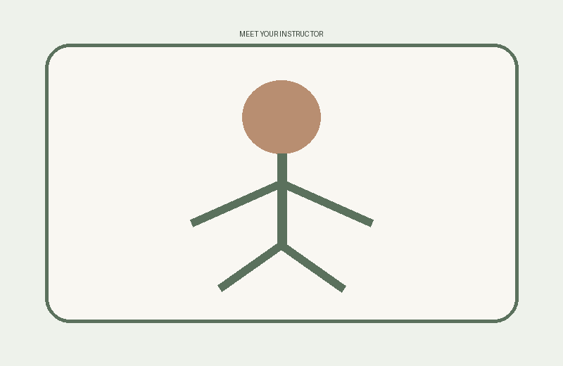

Meet Our Instructor

Jordan Lee
Jordan teaches with a calm and supportive approach and enjoys helping beginners feel comfortable with yoga. Classes include clear instructions and options for different ability and experience levels.
Accessibility Accommodations
Riverbend welcomes students with different mobility and accessibility needs. Students may request pose modifications, additional setup time, or other reasonable accommodations.
Studio Policies
- Arrive a few minutes before class.
- Wear comfortable clothing.
- Respect the comfort and space of other students.
- Ask for modifications when needed.
- Keep phones quiet during classes.